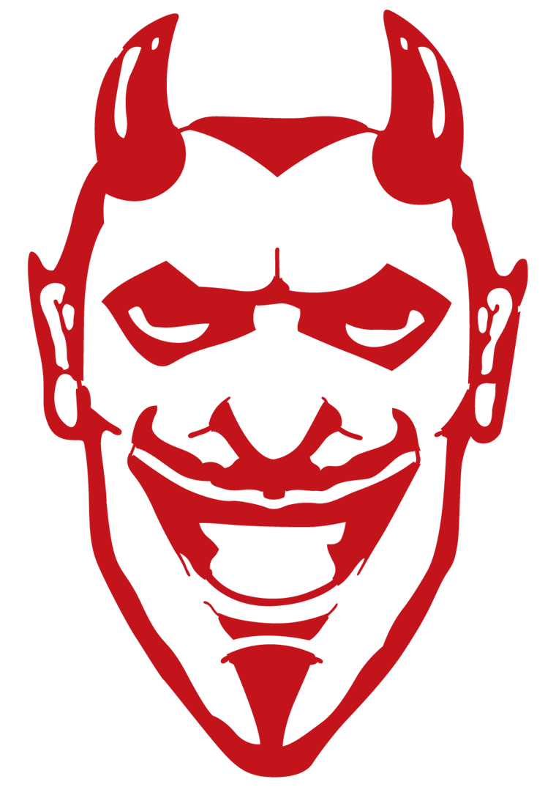
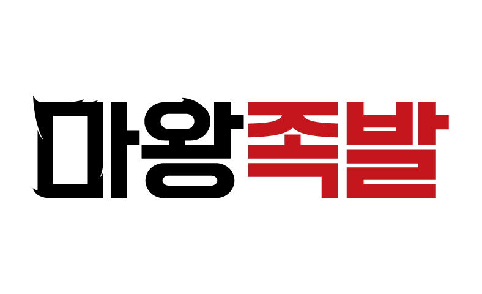

투명 지퍼백 / 1도(먹1도 또는 백1도) 인쇄 전제. 캐릭터는 RED HOUR에서 쓴 마왕 데빌 아트. 카피는 대표님 시안 “마왕의 / 한쌈에 / 확신을”.
원래 대표님 브리프가 “캐릭터=위트 / 카피=진지” 였는데, 그 구조가 지금도 맞다고 봐요. “마왕의 한쌈에 확신을”이 위트있게 안 느껴지는 게 정상이에요 — 이 카피는 원래 진지한 담당이라서요. 위트는 카피가 아니라 ‘무서운 마왕이 쌈채소를 권한다’는 상황의 아이러니에서 나와요. 진지한 카피 + 능청스러운 캐릭터의 온도차 자체가 컨셉이 됩니다.
추천: 카피는 지금 그대로 진지하게 두고, 위트는 캐릭터/비주얼에만 얹는 1안(캐릭터). 다만 대표님이 “카피만으로도 괜찮다”고 하신 방향이 살아있으니, 위트를 완전히 뺀 2안(타이포)도 나란히 비교해서 고르시게 준비했어요.
마왕이 직접 쌈채소를 “권하는” 능청 컨셉. 뿔에서 잎이 돋고, 이빨 사이에 쌈잎 한 장. 카피는 진지하게 눌러서 온도차로 웃김. 투명 봉투라 실제 채소가 마왕 뒤로 비쳐 배경이 됩니다.


투명 지퍼백 · 1도 인쇄 · 잎 안쪽 흰 잎맥은 인쇄 안 하는 ‘빈 부분(투명)’으로 처리 → 뒤 채소가 비쳐 자연스러움
캐릭터 없이 카피만. “마왕의 / 한쌈에 / 확신을”을 굵고 진지하게 쌓아 프리미엄·자신감 톤. ‘한쌈’을 괄호로 감싸 쌈 싸는 행위를 타이포로 은유. 미니멀해서 1도 인쇄에서 가장 깔끔하고 채소가 잘 비칩니다.
투명 지퍼백 · 1도 인쇄 · 괄호/여백 위주라 판형·색 변경에도 안정적